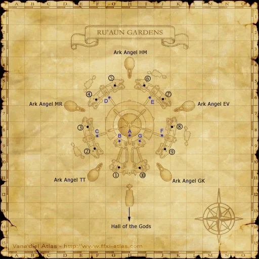
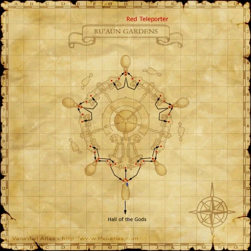
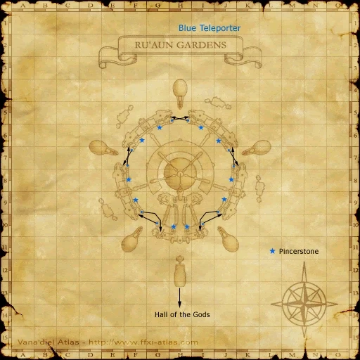
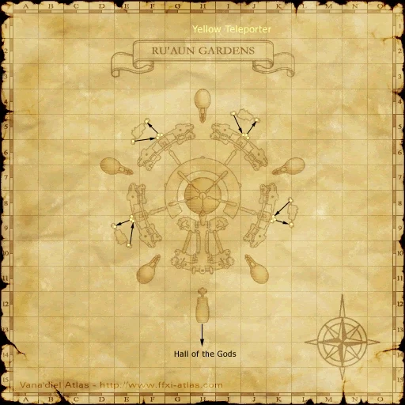
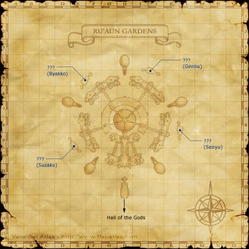
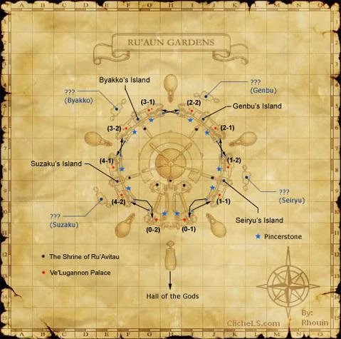
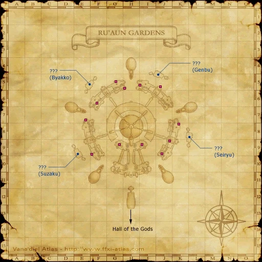

Before you begin
- Obtain the Cerulean Crystal in The Mithra and the Crystal and complete the Shimmering Circle scene in Hall of the Gods.
Starting point
Shimmering Circle · Hall of the Gods
Walkthrough
- Continue from the Shimmering Circle at the northern end of Hall of the Gods. If needed, examine it again to use the lift.
- Proceed through the upper passage and enter Ru’Aun Gardens.
- Watch the Ru’Aun Gardens arrival scene. You have reached Tu’Lia (Sky), and Ark Angels becomes the next story mission.
Battle and progress notes
- Sky opens during this transition; defeating the Ark Angels or Eald’narche is not a prerequisite for your first Sky visit.
- Crag teleports and Home Point registration are travel conveniences with their own conditions. They do not replace this first-access story route.
Completion and reward
Access to Tu’Lia / Sky.
What this opens
- Sky: Ru’Aun Gardens and connected areas
- Ark Angels
Area maps
Open a zone below, then select a map to enlarge it. Match the named floors and grid coordinates in the steps; these are reference area maps, not a live position tracker.
Hall of the Gods


Ru'Aun Gardens





















Zone guides
References
Steps are an original summary of the linked walkthrough and reviewed source. Other servers’ bonus rewards are not included. How to read requirements, waits and battlefield notes.
Additional level-75 reference
|
Walkthrough
- Head back to the Hall of the Gods and touch the sealed gate and watch the cutscenes.
- Note: You will also have to touch the Portal to Sky for the last CS.
Game Description
- Mission Orders
- The path to Tu'Lia has opened!
Adapted from Eden Wiki: The Gate of the Gods · Contributors and history · CC BY-SA 4.0. Revision 8948. Layout, links and optional background text adapted for Zenith.